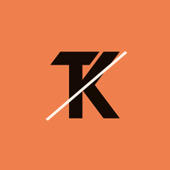

Small enough to ignore. Common enough to matter.
We look for what nobody thinks to ask for.
↓A niche is meant to belong to a few.
Some only look that way.
Nobody names it. It's just how things are.
Everyone keeps it to themselves.
Nobody asks for what they've never pictured fixed.
Then it goes. And you notice it was ever there.
Look around. The room was full.
Made so far

TitanKeysA keyboard for the Titan 2 Elite, down to the smallest detail.Solve a niche everyone has.